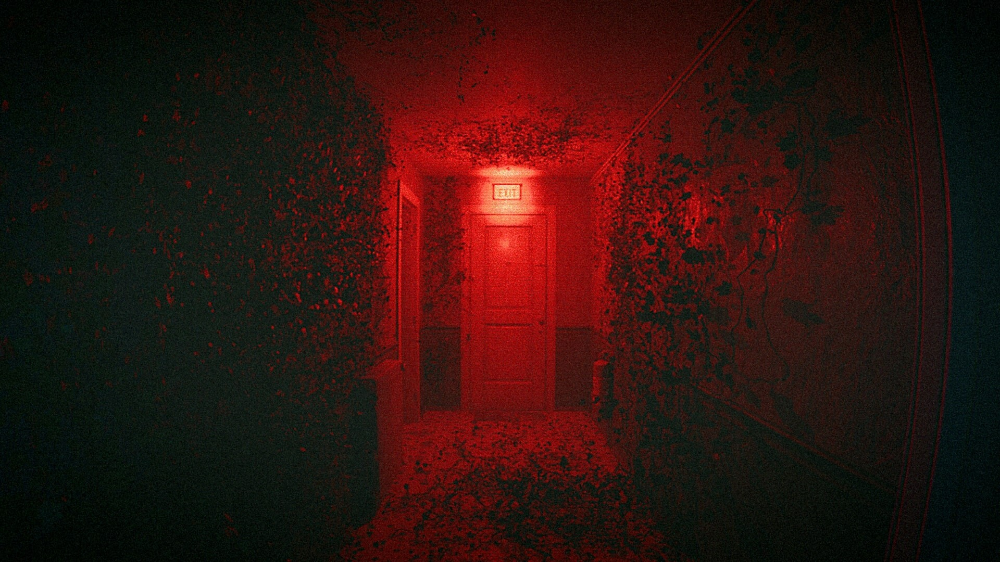

Captured 2

Score: 9.0 / 10
Genre: Horror • Anomaly • Survival Horror
Review
Captured 2 is an anomaly horror game that traps you in an ever-changing apartment. You are armed with only a camera and a flashlight, stuck in a loop of your own house. The VHS-style aesthetic and unsettling sound design create an immersive experience that genuinely caught me off guard. The jumpscares, or when the entities appear are very good, albeit a bit loud... I almost threw my mouse across the room on one of them.
Pros
- Terrifying atmosphere and liminal spaces
- Unique anomaly-capturing gameplay loop
- Strong psychological horror elements and story
- Very Positive reception on Steam (99%)
Cons
- Can feel repetitive on longer runs
- Some entity encounters are OVERLY punishing
Final Verdict: One of the best anomaly horror games out there. If you're a fan of anomaly-based horror games, and immersive atmospheres, this may be for you.